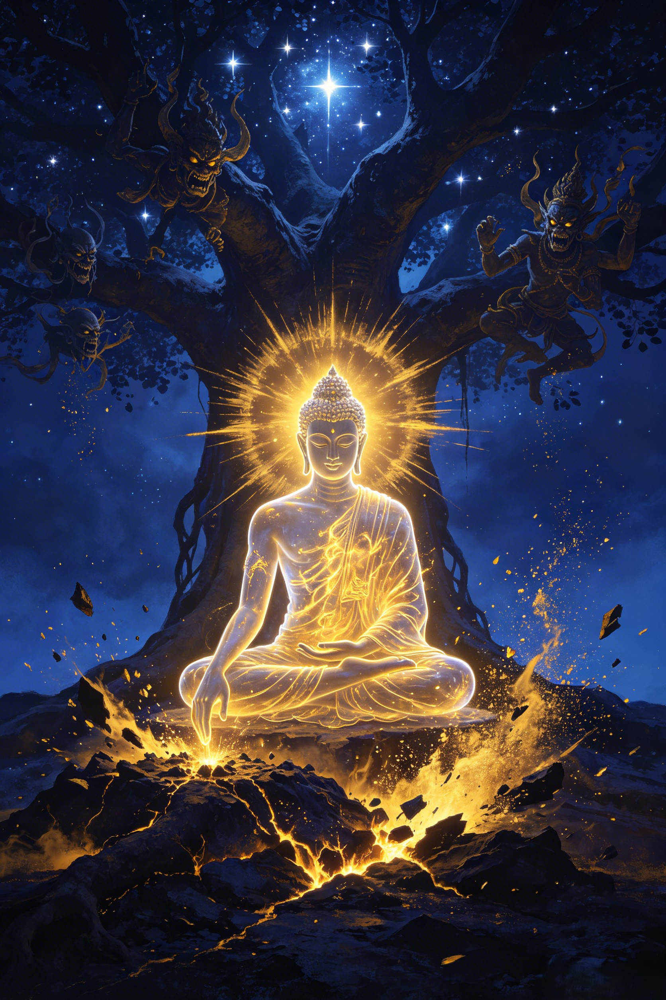

Origins
Before he was the Tathagata, he was Siddhartha. A prince who walked away from a kingdom, a seeker who sat beneath a tree until the universe made sense — the path from mortal to the Enlightened One.
He was born a prince in the Shakya kingdom, sheltered within palace walls built to hide the world's suffering. His father, warned by a prophecy that the child would either conquer the world or renounce it, surrounded him with luxury. But Siddhartha was curious. At 29, he ventured beyond the gates and saw four sights that shattered his universe: an old man bent with age. A sick man racked with disease. A corpse being carried to the pyre. And a wandering ascetic — serene, at peace. The question formed in his mind: "Why is there suffering, and how can it end?" That night, he kissed his sleeping wife and son goodbye, and walked into the forest. He would not return until he had the answer.
For six years, Siddhartha practiced every form of asceticism known to the spiritual masters of India. He starved himself until his ribs showed through his skin. He held his breath for impossible durations. He slept on nails and sat in frozen rivers. He became so thin that pressing on his stomach, he could feel his own spine. Two famous teachers — Alara Kalama and Uddaka Ramaputta — declared he had matched their own attainments and offered him leadership. But Siddhartha refused. None of these practices had answered his question. Extreme indulgence had not worked in the palace. Extreme denial had not worked in the forest. He realized there must be — a Middle Way.
At Bodh Gaya, beneath a great fig tree, Siddhartha sat on a cushion of grass and made a vow: "Until I find the truth, I will not rise from this seat." Mara — the demon lord of desire, fear, and death — attacked him with armies of demons, with seductive daughters, with storms and fire. Siddhartha touched the earth with his right hand, calling it as his witness. The earth shook. Mara fled. Through the three watches of the night, Siddhartha saw his past lives, understood the mechanism of karma and rebirth, and grasped the Four Noble Truths and the Eightfold Path. When the morning star rose, he was no longer Siddhartha. He was the Buddha — the Awakened One.
The Buddha hesitated. The truth he had discovered was so subtle, so profound, that he doubted anyone could understand it. A god appeared and pleaded: "There are beings with little dust in their eyes. Teach them." So the Buddha walked to Sarnath and found his five former ascetic companions — the men who had abandoned him when he took food and rejected extreme fasting. In the Deer Park, he gave his first sermon: the Dhammacakkappavattana Sutta. He explained the Middle Way, the Four Noble Truths, and the Eightfold Path. When he finished, one of the five — Kondañña — understood. The first sangha was born. For the next 45 years, the Buddha walked the dusty roads of northern India, teaching princes and prostitutes, merchants and murderers, turning the wheel of the Dharma wherever he went.
In Chinese Buddhist cosmology — and especially in Journey to the West — the historical Buddha evolved into something far more cosmic. The Tathagata Buddha of the Western Paradise is no longer the wandering teacher of ancient India. He is the Supreme Being of a vast celestial realm, seated on a thousand-petal lotus, his body marked with the thirty-two marks of a great being. He sees past, present, and future simultaneously. He designed the entire pilgrimage — the 81 tribulations, the selection of each pilgrim, the moment of each rescue — as a single coherent lesson in enlightenment. When the pilgrims finally reached his presence, they realized: the journey had been inside the Buddha's awareness the entire time.
Dive Deeper